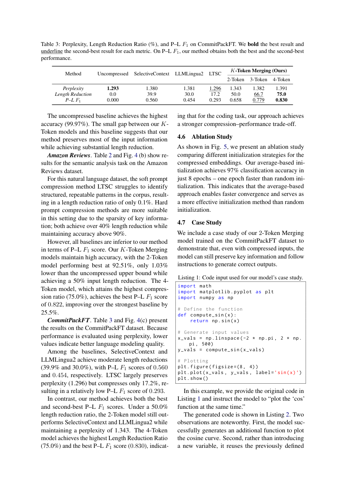

#1
★ 7/10
Compressing Sequences in the Latent Embedding Space: $K$-Token Merging for Large Language Models
在潜在嵌入空间中压缩序列：面向大语言模型的K-Token合并方法

图 Figure · Page 7 of paper
🎯 在潜空间合并Token，最高压缩75%输入长度且性能几乎不降。
K-Token Merging compresses LLM input sequences in latent space, cutting length by 75% with minimal accuracy loss.
| 维度 | 中文 | English |
|---|---|---|
| ❓ 待解决 的问题 |
大语言模型在处理长文本时，自注意力机制的计算复杂度随输入长度呈平方级增长，推理代价极高。现有的Token压缩方法大多在离散的词元空间（即文字层面）操作，忽略了在连续嵌入空间中进行更高效压缩的可能性。因此需要一种能在嵌入层面大幅压缩序列、同时保留任务性能的方法。 | Large Language Models (LLMs) suffer from quadratic computational scaling with input length due to self-attention, making long-prompt inference extremely costly. Existing token compression methods work in the raw token/text space, which misses opportunities for more efficient compression in the continuous embedding space. There is a need for a compression approach that reduces sequence length more aggressively while preserving task performance. |
| 💡 解决 的亮点 |
• 潜空间压缩创新：不在文字层面删减或摘要，而是用轻量编码器将每K个连续Token嵌入合并为一个，完全在连续嵌入空间操作。 • 端到端可训练：LoRA微调的LLM直接处理压缩后的嵌入向量，生成仍在原始词表中进行，易于与标准LLM集成。 • Pareto最优效率：在多种任务上实现最高75%的输入长度压缩，且处于性能与压缩率的Pareto前沿。 | • Novel latent-space compression: instead of dropping or summarizing tokens in text space, K-Token Merging merges every K consecutive token embeddings into one via a lightweight encoder, operating entirely in the continuous embedding space. • End-to-end trainable pipeline: a LoRA-adapted LLM processes the compressed embeddings while generation still occurs in the original vocabulary, making the framework plug-and-play compatible with standard LLMs. • Pareto-optimal efficiency: the method achieves up to 75% input length reduction and sits on the Pareto frontier of performance vs. compression ratio across diverse tasks. |
| 🧪 实验 内容 |
实验覆盖三个不同任务：结构化推理（Textualized Tree数据集）、情感分类（Amazon Reviews数据集）和代码编辑（CommitPackFT数据集）。与标准全上下文LLM及在词元空间操作的现有压缩方法进行对比。评估指标包括各任务专属性能指标（如准确率、F1、代码编辑质量），并系统分析不同K值下的性能-压缩率权衡曲线。 | Experiments were conducted on three diverse tasks: structural reasoning using the Textualized Tree dataset, sentiment classification using Amazon Reviews, and code editing using CommitPackFT. Baselines included standard full-context LLMs and existing prompt compression methods operating in token space. Evaluation measured task-specific performance metrics (e.g., accuracy, F1, code edit quality) against the compression ratio (K), exploring the performance-vs-compression trade-off across different values of K. |
| 📊 实验 结果 |
K-Token Merging在K=4（即4合1合并）时实现最高75%的输入长度压缩，在三个基准任务上性能下降极小。该方法在性能-压缩率的Pareto前沿上持续优于现有词元空间压缩基线。在结构化推理、情感分类和代码编辑任务上，仅使用原始Token数量的25%，仍保持有竞争力的准确率。 | K-Token Merging achieves up to 75% reduction in input sequence length (K=4, i.e., 4-to-1 merging) with minimal performance degradation across all three benchmarks. The method consistently lies on the Pareto frontier of performance vs. compression ratio, outperforming existing token-space compression baselines at equivalent compression levels. On structural reasoning, sentiment classification, and code editing tasks, the framework maintains competitive accuracy while processing only 25% of the original token count. |
| 🏁 结论 | K-Token Merging证明了潜空间压缩比传统词元空间压缩方法更高效，在Pareto前沿实现高达75%的输入压缩。本文开辟了高效LLM推理的新方向，表明合并后的嵌入表示可以端到端学习，且不牺牲生成质量。 | K-Token Merging demonstrates that latent-space compression is a more efficient and effective paradigm for reducing LLM input length than traditional token-space methods, achieving up to 75% compression on the Pareto frontier. This work establishes a new direction for efficient LLM inference by showing that merged embedding representations can be learned end-to-end without sacrificing generation quality. |
| 🔗 论文 链接 |
arXiv: 2604.15153v1 · 📥 PDF | |
⚙️ Method · 方法详解
K-Token Merging通过一个轻量编码器，将输入序列中每K个连续的Token嵌入向量合并为一个嵌入，从而将序列长度压缩为原来的1/K。压缩后的嵌入序列输入给经过LoRA微调的LLM进行处理，LLM被训练以理解这些合并后的表示。输出端的文本生成仍在原始词表空间进行，无需修改解码流程。编码器与LoRA适配器联合端到端训练，使模型能学习到针对特定任务的最优压缩策略。
K-Token Merging introduces a lightweight encoder that takes every K consecutive token embeddings from the input sequence and merges them into a single embedding vector, reducing sequence length by a factor of K. The compressed embedding sequence is then fed into a LoRA-adapted LLM, which has been fine-tuned to understand and process these merged representations. Crucially, text generation at the output side remains in the original vocabulary space, so no changes are needed to the decoding process. The encoder and LoRA adapters are jointly trained end-to-end, allowing the model to learn the optimal compression strategy for each task.
📐 Key Formulas · 关键公式
\[\text{Compressed Length} = \left\lfloor \frac{L}{K} \right\rfloor\]
💡 将长度为L的输入序列每K个Token合并为一个，压缩后序列长度变为原来的1/K。
An input sequence of length L is compressed to ⌊L/K⌋ by merging every K consecutive token embeddings into one, achieving a K× reduction in sequence length.
\[\mathbf{e}'_i = \text{Encoder}(\mathbf{e}_{(i-1)K+1}, \ldots, \mathbf{e}_{iK})\]
💡 轻量编码器将第i组的K个连续Token嵌入合并为单一压缩嵌入e'_i。
A lightweight encoder merges the i-th block of K consecutive token embeddings into a single compressed embedding e'_i.
🌟 Why It Matters · 为什么重要
随着LLM被大量用于处理长文档，推理效率是关键瓶颈，本文提供了一种在更底层（嵌入空间）操作的通用压缩框架，比现有方法更彻底。实现75%长度压缩且无词元级信息损失，对降低生产环境中LLM推理成本具有重要的实际价值。
As LLMs are increasingly deployed on long documents, efficient inference is a critical bottleneck — this work offers a principled, task-agnostic compression framework that operates earlier in the pipeline (embedding space) than prior art. By achieving 75% length reduction without text-space information loss, it has practical implications for reducing inference cost in production LLM systems across coding, classification, and reasoning applications.